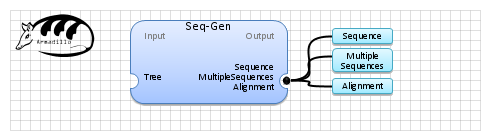

| Name | Seq-Gen | |
| View |  | |
| Publication(s) | Seq-Gen: an application for the Monte Carlo simulation of DNA sequence evolution along phylogenetic trees. Rambaut A, Grassly NC.
Comput Appl Biosci. 1997 Jun;13(3):235-8. | |
| Website | http://tree.bio.ed.ac.uk/software/seqgen/ | |
| Description | Seq-Gen is a program that will simulate the evolution of nucleotide or amino acid sequences along a phylogeny, using common models of the substitution process. A range of models of molecular evolution are implemented including the general reversible model. State frequencies and other parameters of the model may be given and site-specific rate heterogeneity may also be incorporated in a number of ways. Any number of trees may be read in and the program will produce any number of data sets for each tree. Thus large sets of replicate simulations can be easily created. It has been designed to be a general purpose simulator that incorporates most of the commonly used (and computationally tractable) models of molecular sequence evolution.
(c) Copyright, 1996-2004 Andrew Rambaut and Nick Grassly | |
| Input (1) |
Tree | |
| Output (3) |
Sequence MultipleSequences Alignment | |
| Keywords (1) | Sequences, Random | |
| Related (1) | Random Sequences | |
| Sample workflow | seqgen.properties.db |